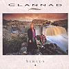

Celtic Lyrics Corner > Artists & Groups > Clannad > Sirius > Something To Believe In
|  | Something To Believe In |
| Credits : | Ciarán Brennan |
| Appears On : | Sirius ; Pastpresent |
| Language : | English |
Lyrics :
Everybody's rushing around
Trying to keep a hold on some peace of mind
All the time
And somebody's looking around
Trying to find something to believe in
To believe in
All the things they promised
They're always lies
Well, it's something
Oh it's something to believe in
You know it's something
Every little once in a while
You take a chance to win on a turning card
But it may be hard
We could be fooled on the merry-go-round
But I'm trying to find something to believe in
To believe in
All the things they promised
You know they always lied
It's something
Something to believe in
You know it's something
I've been willing and strong all along
Through chilling times in a sea of heartbreak
Where you give and take
I won't give in to the promises
Until I find something to believe in
To believe in
Oh it's something
That's something to believe in
We've got something to believe in